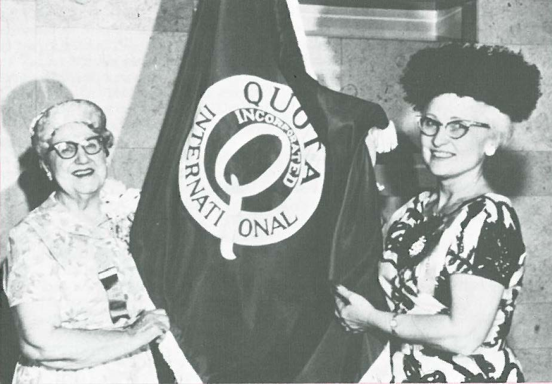

WHAT WE DO
We Empower:
child_care
Children
By protecting our children, we protect the future of our world.
arrow_drop_down_circle
hearing
Deaf and Hard of Hearing
Provide the deaf and hard-of-hearing with equal opportunities to the realize their full potential.
arrow_drop_down_circle
NEWS
Merrimack Valley Idol - Nov. 4th
Quota International of Andover will once again host Merrimack Valley Idol - a competition among the most talented vocalists in the Merrimack Valley.
The event will be held at DiBurro's Function Hall in Haverhill, MA.
It is $95 per person. All contributions will benefit the people and communities we serve.
To RSVP, email us
You can also get information about this event on our new Facebook Page!
GET INVOLVED
Reach out, Volunteer!
Quota International does important, valued work in and around our community including our annual magnum opus - the Merrimack Valley Idol.
We strive to elevate some of the most misfortunate people in the Merrimack Valley, Quota’s efforts focus on helping women, children, and the hearing-impaired.
If you would like to help impoverished, disabled, and/or underprivileged members of our community, be sure to volunteer to help Quota spread its ideas of compassion, equality, and, above all else, sharing the wealth.
To volunteer with Quota of Andover, send us an email!
ABOUT
-
arrow_drop_down_circle
MISSION
Quota International, Inc. is a non-profit organization empowering women, children, the deaf, hard of hearing, and speech impaired in local communities around the world.
In 1919, five business women inspired to serve, founded Quota International as the first international women’s service organization, one year before women in the United States won the right to vote.
Today, more than 5,000 Quota members, women, men, and youth, come together to help women and children overcome poverty, educational, and workforce challenges in 14 countries.
Though the projects and partnerships may have changed over the past 100 years, one thing remains the same, Quotarians continue to make a difference.
-
arrow_drop_down_circle
HISTORY
The idea for Quota International was sparked when Wanda Frey Joiner attended a Christmas "ladies night" party hosted by the Kiwanis Club of Buffalo, New York. Wanting to form a similar organization for women to join, a few weeks later, Joiner and four businesswomen, Florence M. Smith, Alice C. Sauers, Ora G. Cole,and Jean Ware Redpath, signed incorporation documents forming Quota Club International on February 6, 1919, one year before the United States passed the 19th Amendment granting women the right to vote and less than one month after the end of World War I. Because many women had joined the workforce and organized campaigns to support the troops, when the war was over, women wanted more employment and empowerment opportunities. Their enthusiasm propelled the organization to become the first international women-only service organization in 1925.
The five founders chose to keep their dream simple by using the “golden rule” as their code and the “sharing” of both talent and responsibility as its ideal. During the early years of Quota, the organization's focus targeted and promoted: good citizenship, crime prevention, extending friendly relations, gaining recognition for the achievements of women, and international relations. At its first annual convention held in Scranton, Pennsylvania, Quotarians were faced with several changes—the original board of directors recommended that an entirely new board be selected, and it was evident that a central headquarters office should be set up to manage all activities of Quota.
That next issue of the Quotarian provided a snapshot of the women who were Quota presidents at that time. Occupations ranged from owner of “the largest retail shoe store in Scranton” to a concert harpist, an osteopath, a city official, and a general secretary of a local YMCA—in all a reflection of the diversity of Quota’s early members.
By the fourth annual convention held in Allentown, Pennsylvania, membership had risen to over one thousand women, and clubs had been established in Maryland, Delaware, Virginia, and Ohio. Service work directed at girls was adopted as a major initiative. All clubs were urged to identify underprivileged girls and support them to remain in school longer or assist them in attending college or attaining special training. Clubs expanded upon this idea and the program flourished. Five years into its existence, Quota Club International doubled its members by its tenth anniversary with clubs as far south as Georgia, through the Midwest, and into the Northeast United States.
The realization of the international dream came in 1925 with the formation of a club in Winnipeg, Manitoba, Canada, and in 1926 in the province of Saskatchewan. In 1927, Quota received the attention of U.S. President Calvin Coolidge, who sent his greetings to that year’s convention attendees. Headquarters was on the move to the nation’s capital—Washington, D.C.—and a permanent home. Each year, headquarters had moved with the current president and now with a pledge of support from each club ($1,700 total), Quota would have a permanent home from which to do business.
By the 1929 annual convention in Worcester, Massachusetts, membership had grown to 2,500. At Quota International's 20th Convention in 1939, the organization promoted the World Center for Women's Archives in New York, which had formed in 1935. This World Center was also supported by many famous women's rights activist, including: Inez Haynes Irwin,Florence Ellinwood Allen, Dorothy Thompson, Ida Tarbell, Mary R. Beard, and Rosika Schwimmer. With the outbreak of World War II, Quotarians worked together to raise funds to purchase two ambulances for the Red Cross and worked on a variety of other war and defense projects, including: joining the civil defense, helping at nurseries, canteen work, selling war bonds, performing blood typing, sewing and knitting, and attending first aid courses. Upon the conclusion of the war, the organization modified its objectives. At the 1946 convention it was decided that Quota International would emphasize service for the needs of the deaf and hard-of-hearing, while continuing to support and empower women and children.
Wanda Frey Joiner, the founder of Quota International, was born in Odessa, Russia in 1882. At the age of nine, following her father's death, she immigrated to the United States with her mother and brother. When she was 24, Wanda Frey married Robert Parks only to be widowed three years later. She went on to complete an extensive business course at Canton's National Business College in Buffalo, New York, and joined the paint and glass industry as a filing clerk. Her professional successes included leading two companies to multi-million dollar status through her work as comptroller, president and general manager, and board member. She started her own business in the paint industry that she ended up selling in 1948. Joiner continued to build upon her business ventures while also devoting time to Quota International until her death in 1968.